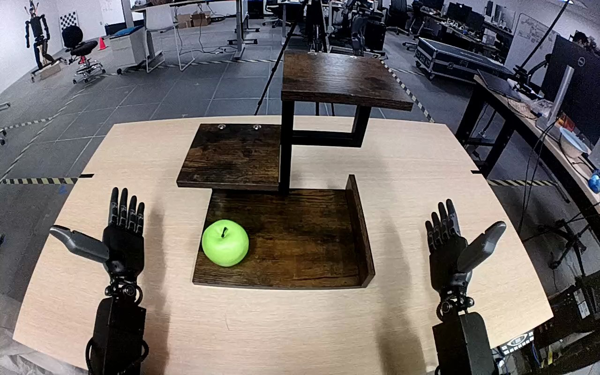

NVIDIA GR1 · 67
Video 67

Visual review action_review.json
{
"prompt_protocol": "humanoid_action_v1",
"prompt_provenance": "visually_authored_from_video_and_initial_frame",
"reviewed_contact_sheets": [
"sheet_001.jpg"
],
"inspected_frame_stride": 2,
"inspected_sampled_frame_count": 60,
"initial_scene": "Egocentric elevated view over two open dexterous hands and a three-level wooden shelf. One green apple rests upright on the left side of the bottom shelf. The right forearm enters from the lower-right body side and the left forearm from the lower-left.",
"observed_sequence": [
{
"frame_interval": [
0,
22
],
"action": "Both palms are initially open. The apple remains on the bottom shelf; the left hand stays outside the shelf and does not contact an object.",
"confidence": "high"
},
{
"frame_interval": [
23,
42
],
"action": "The right arm moves inward to the bottom shelf, bringing its open fingers and opposing thumb around the green apple. The thumb crosses the apple front while the other fingers approach its far side.",
"confidence": "high"
},
{
"frame_interval": [
43,
63
],
"action": "The right hand adjusts around the apple and closes its fingers and thumb into a grasp. The apple is still at bottom-shelf height while the grasp is established.",
"confidence": "high"
},
{
"frame_interval": [
64,
89
],
"action": "The right hand lifts the grasped apple clear of the bottom shelf and transports it upward on the right side of the shelf structure. The left hand remains open and does not support the apple or shelf.",
"confidence": "high"
},
{
"frame_interval": [
90,
113
],
"action": "The right hand carries the apple over the top shelf and lowers it upright onto that surface while maintaining its surrounding grasp.",
"confidence": "high"
},
{
"frame_interval": [
114,
119
],
"action": "The right fingers begin opening around the apple. The apple remains upright on the top shelf at the end, with the right hand still adjacent and partly in front of it; no complete withdrawal is shown.",
"confidence": "high"
}
],
"arm_hand_roles": {
"right": "Sole manipulating hand: surrounds and grasps the apple, lifts it from the bottom shelf, transports it upward, lowers it onto the top shelf and starts opening its fingers beside it.",
"left": "Open idle hand visible on the robot left side throughout; it neither holds nor stabilizes the shelf or apple.",
"coordination": "Single-handed manipulation. No hand-to-hand transfer, coordinated support or person interaction."
},
"anatomical_side_evidence": "The camera looks forward and downward from behind/above the hands in an egocentric view. The active arm continuously emerges from the lower-right robot-body side; the other arm remains on the lower-left. Initial open palms show mirrored opposing thumbs, with the active right hand thumb on its lateral image-right side. Continuous arm tracking and this palm orientation support robot-relative right/left naming rather than a viewer-facing third-person left/right reversal.",
"terminal_state": "The green apple is upright on the top wooden shelf. The right fingers have started opening around it, with the right hand still beside and partly in front of the apple. The left hand remains open away from the shelf. The right hand is not shown fully withdrawn.",
"uncertainties": [
"The right hand remains close to the apple and partly occludes it at the end; complete separation of every fingertip and a fully withdrawn hand cannot be verified."
],
"annotation_discrepancies": [],
"evidence_frame_indices": [
0,
40,
62,
70,
96,
112,
116,
119
],
"selected_execution_status": "success",
"selected_execution_status_basis": "The apple visibly reaches and rests upright on the instructed top shelf, with opening fingers visible. This records the placement outcome without claiming a completed hand withdrawal.",
"inspection_coverage": "Viewed the complete sheet containing every second decoded frame from 0 through 118 (60 samples), the source initial PNG, and native frames 40, 62, 70, 96, 112, 116 and final frame 119.",
"video_id": "67",
"dataset": "NVIDIA_GR1_100",
"dedicated_review_agent": "review_gr1_67",
"review_source_video": "NVIDIA_GR1_100/67/original/original.mp4",
"source_frame_count": 120,
"source_fps": 20.0,
"native_detail_frames": [
40,
62,
70,
96,
112,
116,
119
],
"world_model_prompt": "The robot closes its right hand around the green apple on the bottom shelf and lifts it clear. It carries the apple upward, lowers it onto the top shelf, and begins opening its right fingers, ending with the apple upright on the shelf and its hand still beside it. Keep the camera fixed; preserve robot geometry, physically valid joint motion, and normal gripper opening and closing.",
"original_task_instruction": "Use the right hand to pick up green apple from bottom shelf to top shelf.",
"selected_segment": {
"start_frame": 0,
"end_frame_exclusive": 120,
"reason": "Complete original single-task reference; no cropping or trimming requested."
},
"source_video_sha256": "6477e2307443ea759b274ba6ed555e49e0ea441722452e29c41dcb21e6812f58",
"review_completed_at": "2026-10-13T18:25:55.977234+00:00"
}